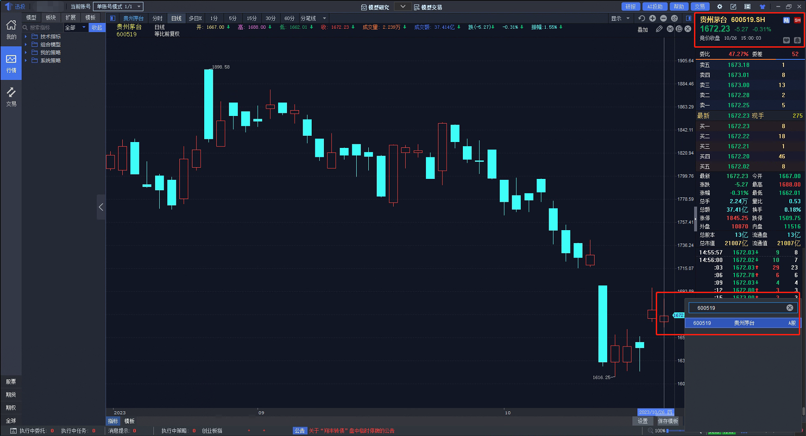
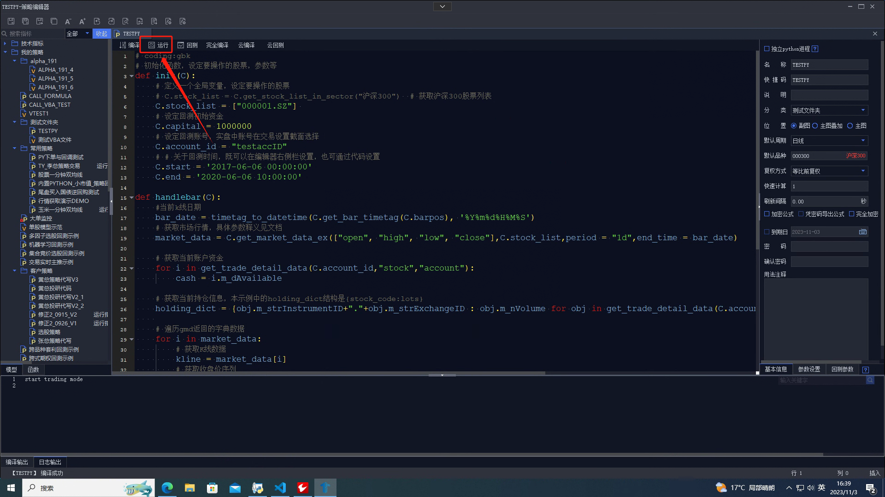
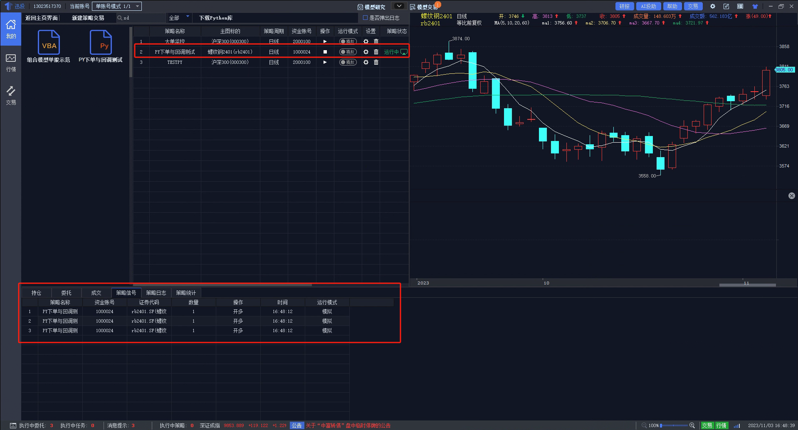
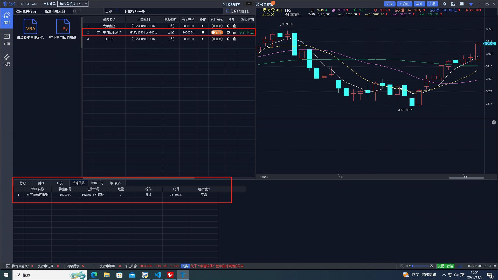

函数命名规则
- 函数名以
get_开头的，表示数据来源于客户端内存 - 函数名以
query_开头的，表示数据是向服务查询
账号类型说明
- 'FUTURE' - 期货账号
- 'STOCK' - 股票账号
- 'CREDIT' - 信用账号
- 'FUTURE_OPTION' - 期货期权
- 'STOCK_OPTION' - 股票期权
- 'HUGANGTONG' - 沪港通
- 'SHENGANGTONG' - 深港通
symbol_code - 代码表示
QMT代码(symbol_code)是QMT平台统一用于表示交易标的的代码 其格式为:交易标的代码.交易所代码,例如深圳证券交易所的平安银行,QMT代码为000001.SZ(不区分大小写)。代码表示可以在QMT投研终端的行情列表或者按键精灵中查询。

交易所代码
目前QMT投研支持国内9个交易所,9个交易所的代码缩写如下:
| 交易所名称 | QMT简称 | 显示后缀 |
|---|---|---|
| 上海证券交易所 | SH | SH |
| 深圳证券交易所 | SZ | SZ |
| 北京证券交易所 | BJ | BJ |
| 中国金融期货交易所 | IF | CFFEX |
| 上海期货交易所 | SF | SHFE |
| 大连商品交易所 | DF | DCE |
| 郑州商品交易所 | ZF | CZCE |
| 上海国际能源交易中心 | INE | INE |
| 广州期货交易所 | GF | GFEX |
交易标的代码
交易标的代码是指交易所给出的交易标的代码, 包括股票（如 600000）, 期货（如 rb2011）, 期权（如 10002498）, 指数（如 000001）, 基金（如 510300）等代码。
注意
对于期货合约代码来说，我们仅对market做了简化处理，symbol仍遵守交易所标准命名规则，且严格区分大小写，例如AP401.ZF不能写成ap401.ZF,rb2401.SF不能写成RB2401.SF
symbol示例
| 市场中文名 | 市场代码 | 示例代码 | 显示后缀 | 证券简称 |
|---|---|---|---|---|
| 上交所 | SH | 600000.SH | SH | 浦发银行 |
| 深交所 | SZ | 000001.SZ | SZ | 平安银行 |
| 北交所 | BJ | 830779.BJ | BJ | 武汉蓝电 |
| 中金所 | IF | IC2311.IF | CFFEX | 中证 500 指数 2023 年 11 月期货合约 |
| 上期所 | SF | rb2311.SF | SHFE | 螺纹钢 2023 年 11 月期货合约 |
| 大商所 | DF | m2311.DF | DCE | 豆粕 2023 年 11 月期货合约 |
| 郑商所 | ZF | FG305.ZF | CZCE | 玻璃 2023 年 5 月期货合约 |
| 上海国际能源交易中心 | INE | sc2311.INE | INE | 原油 2023 年 11 月期货合约 |
| 广期所 | GF | lc2405.GF | GFEX | 碳酸锂 2024 年 05 月期货合约 |
| 上证期权 | SHO | 10005334.SHO | SH | 50ETF购12月2650 |
| 深证期权 | SZO | 90002114.SZO | SZ | 深证100ETF沽12月2700 |
| 板块指数 | BKZS | 290001.BKZS | BKZS | 工业品期货板块指数 |
期货主力连续合约
仅支持回测模式下交易，期货主力连续合约为量价数据的简单拼接，未做平滑处理，如rb00.SF螺纹钢主连合约，其他[主连合约代码请参考](期货数据 (thinktrader.net))
期货加权连续合约
仅支持回测模式下交易，期货加权连续合约为QMT按照一定规则加权合成的连续合约，相比主力连续合约更加平滑,如rbJQ00.SF,其他[加权合约代码参考](期货数据 (thinktrader.net))
mode - 模式选择
QMT投研终端中，策略可以以四种模式运行，分别为调试运行模式，回测模式,模拟信号模式,实盘交易模式，模式需要在运行策略时手动选择
调试运行模式
调试运行模式需要在策略编辑界面点击编辑栏上方的运行，该模式下策略会以实时行情进行运算，但QMT投研终端不会记录交易信号
回测模式
回测模式需要在策略编辑界面点击编辑栏上方的回测，该模式下策略会以右侧栏设定的回测周期推进行情进行运算，回测模式下，发生的交易会被记录在回测结果页面 
模拟信号模式
模拟信号模式需要在策略交易界面，在左侧策略文件栏中选择要进行计算运行的策略，点击右侧圆形按钮选择模拟，点击三角形运行按钮后策略会以实时行情进行运算，该模式下调用的下单函数(passorder)不会产生实际交易，仅会记录交易信号在下方的策略信号栏中
实盘交易模式
实盘交易模式需要在策略交易界面，在左侧策略文件栏中选择要进行计算运行的策略，点击右侧圆形按钮选择实盘，点击三角形运行按钮后策略会以实时行情进行运算，该模式下调用的下单函数(passorder)会对账户实际下单，同时交易信号会记录在下方的策略信号栏中
ContextInfo - 上下文对象
ContextInfo.start/ContextInfo.end - 回测开始/结束时间
注意
一、此属性只在回测模式生效；
二、仅在init中设置生效，应在init中设置完毕；
三、缺省值为策略编辑界面设定的回测时间范围；
四、回测起止时间也可在策略编辑器的回测参数面板中设置，若两处同时设置，则以代码中设置的值为准；
五、结束时间小于等于开始时间则计算范围为空。
释义
可通过此属性设定回测开始/结束的时间,以%Y-%m-%d %H:%M:%S格式传入
原型
ContextInfo.start # 回测开始时间属性
ContextInfo.end # 回测结束时间属性
返回值none
示例
# coding:gbk
def init(ContextInfo):
ContextInfo.start = "2017-01-01 00:00:00"# 回测开始时间为 2017-01-01
ContextInfo.end = "2020-01-01 00:00:00"# 回测结束时间为 2020-01-01
def handlebar(ContextInfo):
# 打印输出当前回测时间
print(timetag_to_datetime(ContextInfo.get_bar_timetag(C.barpos), "%Y-%m-%d %H%M%S"))
2017-01-03 103000
2017-01-03 113000
2017-01-03 140000
2017-01-03 150000
2017-01-04 103000
2017-01-04 113000
2017-01-04 140000
2017-01-04 150000
2017-01-05 103000
2017-01-05 113000
...
ContextInfo.capital - 设定回测初始资金
注意
此函数只支持回测模式。回测初始资金也可在策略编辑器的回测参数面板中设置，若两处同时设置，则以代码中设置的值为准。
释义 设定回测初始资金，支持读写，默认为 1000000
原型
ContextInfo.capital = 10000000 # 设定ContextInfo.capital 值为10000000
返回值float类型的数值，代表当前策略设定的回测金额
示例
# coding:gbk
def init(ContextInfo):
ContextInfo.capital = 10000000
def handlebar(ContextInfo):
print(ContextInfo.capital)
10000000.0
10000000.0
10000000.0
...
ContextInfo.period - 获取当前周期
释义 获取当前周期，即基本信息中设置的默认周期，只读
原型
ContextInfo.period
返回string,返回值含义:
| 值 | 含义 |
|---|---|
| '1d' | 日线 |
| '1m' | 1分钟线 |
| '3m' | 3分钟线 |
| '5m' | 5分钟线 |
| '15m' | 15分钟线 |
| '30m' | 30分钟线 |
| '1h' | 小时线 |
| '1w' | 周线 |
| '1mon' | 月线 |
| '1q' | 季线 |
| '1hy' | 半年线 |
| '1y' | 年线 |
示例
# coding:gbk
def init(ContextInfo):
pass
def handlebar(ContextInfo):
print(ContextInfo.period)
1d
ContextInfo.barpos - 获取当前运行到 K 线索引号
释义
获取主图当前运行到的 K 线索引号，只读，索引号从0开始
原型
ContextInfo.barpos
返回值int类型值,代表着当前K线的索引号
示例
# coding:gbk
def init(ContextInfo):
pass
def handlebar(ContextInfo):
print(ContextInfo.barpos)
0
1
2
3
4
5
...
ContextInfo.time_tick_size - 获取当前图 K 线数目
释义
获取当前图 K 线bar的数量，只读
原型
ContextInfo.time_tick_size
返回值int
示例
# coding:gbk
def init(ContextInfo):
pass
def handlebar(ContextInfo):
print(ContextInfo.time_tick_size)
5297
5297
5297
5297
5297
5297
...
ContextInfo.stockcode - 获取当前图代码
释义
获取当前主图代码，只读
原型
ContextInfo.stockcode
返回值string：对应主图代码
示例
# coding:gbk
def init(ContextInfo):
pass
def handlebar(ContextInfo):
print(ContextInfo.stockcode)
000300
000300
000300
000300
000300
...
ContextInfo.market - 获取当前主图市场
释义
获取当前主图市场，只读
原型
ContextInfo.market
返回值string：对应主图市场
示例
# coding:gbk
def init(ContextInfo):
pass
def handlebar(ContextInfo):
print(ContextInfo.market)
SH
SH
SH
SH
SH
...
ContextInfo.dividend_type - 获取当前主图复权处理方式
释义
获取当前主图复权处理方式
原型
ContextInfo.dividend_type
返回值string，返回值含义：
| 值 | 含义 |
|---|---|
| 'none' | 不复权 |
| 'front' | 向前复权 |
| 'back' | 向后复权 |
| 'front_ratio' | 等比向前复权 |
| 'back_ratio' | 等比向后复权 |
示例
# coding:gbk
def init(ContextInfo):
pass
def handlebar(ContextInfo):
print(ContextInfo.dividend_type)
front_ratio
front_ratio
front_ratio
front_ratio
front_ratio
...
ContextInfo.benchmark - 获取回测基准标的
注意
该属性只在回测模式可用
释义 获取回测基准的代码，只读
原型
ContextInfo.benchmark
返回值string
示例
# coding:gbk
def init(ContextInfo):
pass
def handlebar(ContextInfo):
print(ContextInfo.benchmark)
000300.SH
000300.SH
000300.SH
000300.SH
000300.SH
...
ContextInfo.do_back_test - 表示当前是否为回测模式
释义
表示当前是否为回测模式，只读，默认值为 False
原型
ContextInfo.do_back_test
返回值bool